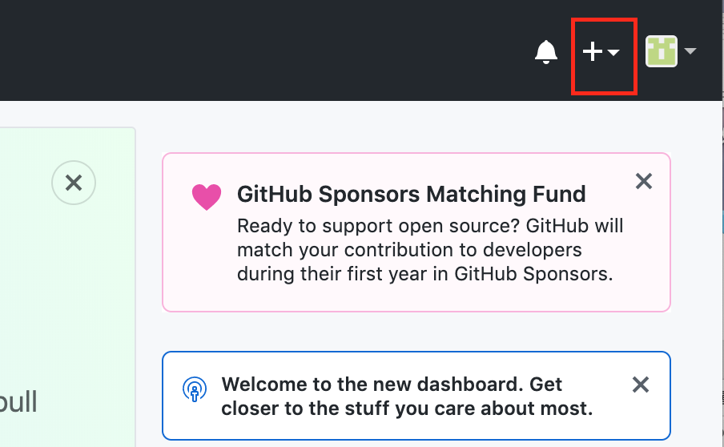

gitとはバージョン管理したり、公開したり、共同作業したりする時に使うソフトです。ゼミでは主にホームページの公開に使っています。詳しく知りたい人はここを参照してください。
使用しているパソコンがMacの場合はここを参考にしてターミナルからHomebrewとgitをインストールしてください。
使用しているパソコンがWindowsの場合はここを参考にしてGit Bashをインストールしてください。

Macの人はターミナルを立ち上げ、Windowsの人はGit Bashを立ち上げてください。
まずgit用のフォルダを作りたいと思います。フォルダ名はなんでもいいのですが、わかりやすいようにホームディレクトリにmygitというフォルダを作りましょう。立ち上げたターミナルorGitBashに下記のコマンドを入力するとフォルダが作成されます。mkdirはmake directory（ディレクトリ（フォルダ）を作る）の略です。
mkdir mygit
gitの初期設定を行います。下記のコマンドをターミナル(orGitBash)に入力してEnterを押しましょう
git init
次に下記のコマンドを入力し、Enterを押します。※打ち間違えが多いので、コピペして自分のメールアドレスだけ修正するといいでしょう。
git config --global user.email "自分のメールアドレス"
次に下記のコマンドを入力し、Enterを押します。※打ち間違えが多いので、コピペして自分の名前(アルファベット)だけ修正するといいでしょう。
git config --global user.name "自分の名前(アルファベット)"
GitHubのページでGitHubのアカウントを作りましょう。
アカウント名、メールアドレス、パスワードは忘れないようにしておきましょう。メモ帳などにコピペしておきましょう。

リポジトリーはフォルダの状態を記憶する場所なのですが、イメージしずらいと思うので、今はフォルダと思っておきましょう。詳しく知りたい人はここを参照してください。
【リポジトリの作成方法】
githubの右上にある+マークをクリックし、New Repositoryをクリックし、新しいリポジトリーを作ります。

下記の画像を参考にdoyolabというリポジトリーを作成します。赤枠のチェッックを入れた後に「Create Repository」を押してください。

リポジトリーのSettingsから下記の設定をします。
https://ユーザー名.github.io/doyolab/ が皆さんのホームページになります。

githubのdoyolabというリポジトリーの中で下記のボタンを押し、リポジトリーのURLをコピーします。

ターミナル(orGitBash)で、下記のコマンドを入力しmygitフォルダに移動します。cdはchange directoryの略です
cd mygit
ターミナル(orGitBash)で下記のコマンドを入力し、GitHubリポジトリのクローンを作成してください。(URLは上でコピーしたURLです。)
git clone リポジトリのURL
mygitの中にdoyolabというフォルダができて、doyolabフォルダの中にREADME.mdファイルが入っていれば成功です。
htmlを知っている人は自分で作っても構いません。htmlに自信がない人はサンプルファイルをダウンロードして修正しながら自分のページを作ってみましょう。まずはサンプルファイルをダウンロードしてください。ダウンロードしたzipファイルを解凍し、doyolabというフォルダの中身をmygitフォルダの中のdoyolabフォルダの中にコピーしてください。
下記の手順でアップロードしてください。
cd mygit/doyolab
(doyolabフォルダに移動するだけなので、既に移動済みの場合はいらない)
git add .
git commit -m "メッセージ"
git push
自分のページに下のようなページが表示されたら成功です。（すぐに更新されない場合は１分ぐらい待つか、ブラウザの履歴を削除してから試しましょう。）
日々のページを更新するときはこの手順でやってください。